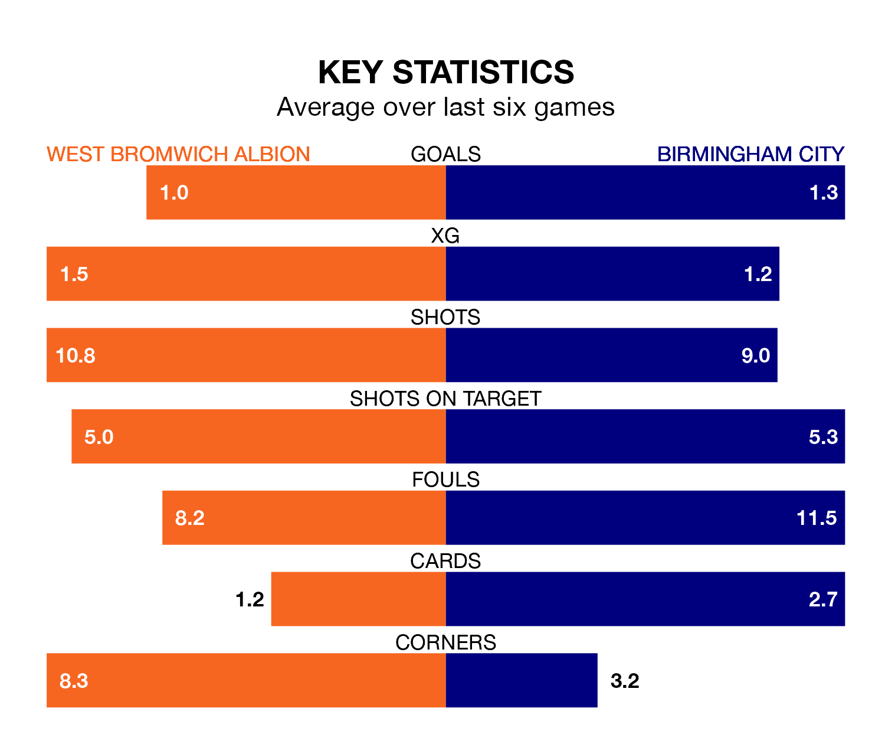

West Bromwich Albion are heavy favourites to keep all three points at home in Saturday's kick-off against Birmingham City.
The Baggies, who sit fifth in EFL Championship with 28 games played, are priced at 1.6 to seal victory at the Hawthorns.
Sitting 15 places and 13 points behind them in the table, Birmingham are 4.4 to win with *Betting Company*, while the draw is at 3.8.
In Alex Palmer, West Bromwich can rely on one of the league's safest pair of hands. He has kept 12 clean sheets in his 28 appearances this season, and no 'keeper has prevented the opposition scoring more often in EFL Championship.
In Birmingham's net, John Ruddy has six clean sheets in 28 games. He has conceded a goal every 63 minutes, 60% more often than the 101 minutes between goals for Palmer.
In the last 10 years, West Bromwich and Birmingham have played each other on 10 occasions. They won four each, and they drew twice.
On average, the Baggies scored 1.3 goals and the Blues 1.5 in those matches.
Their last meeting was on October 6, when Birmingham won 3-1 at home.
With 34 goals in 28 games so far this season, City are scoring at below the league average rate with 1.2 goals per game. And they are conceding more than average, letting in 44 goals at a rate of 1.6 per game.
Albion, meanwhile, are average scorers, with 1.4 goals per game. They have conceded 1.0 goal per game.
The Baggies are in mixed form in EFL Championship, with three wins and three losses from their last six games.
With a win and three draws over that period, the Blues' form is worse – they have taken six points from 18, compared to the hosts' nine.
West Bromwich's last match was on January 20, a 2-0 loss against Norwich City.
Birmingham beat Stoke City 2-1 last time out, also on January 20, with Jay Stansfield and Juninho Bacuna on the scoresheet.
Saturday's match will be refereed by David Webb, who has taken charge of 18 EFL Championship games so far this season, issuing one red card and booking 78 players. He has awarded three penalties.
The last Birmingham game Webb refereed was the 3-2 loss at home against Leicester City on December 18. He is yet to oversee a match featuring West Bromwich this season.
Updated: 15:45 (UTC), 02/02/24